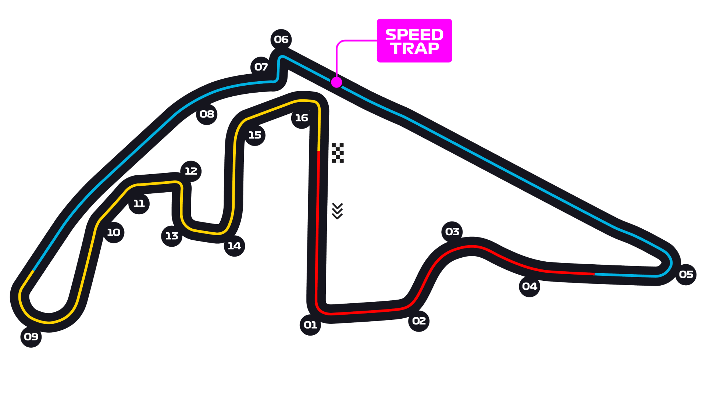

5.281km · 58 laps
Yas Marina Circuit, Abu Dhabi Circuit Guide
The season finale, run into the dusk so that track temperature drops steadily through the race. Reprofiled in 2021 into a faster, more flowing lap with banked corners; still fundamentally a traction-and-braking circuit.
Circuit map

5.281km
Circuit length
58
Race laps
306.183km
Race distance
2 zones
Overtaking zones
DRS / straight modeCorners that matter
Turns 5–6
End of the first long straight — the strongest overtaking opportunity.
Turns 9 and the banked left
Faster, flowing sequence introduced in the 2021 reprofile.
Final sector
Tight, walled, low-speed section where traction and kerb use decide the lap.
Where the passes happen
Improved since the reprofile but still not easy; the long straights into heavy braking zones are where it happens, helped by two DRS zones.
What it does to the tyres
Falling track temperature through the race means graining early and better grip later — the classic Yas Marina strategy question is when to give up track position.
Worth knowing
Circuit notes
- First Grand Prix: 2009.
- The day-to-night transition is the defining feature: qualifying conditions match the start of the race, not the end.
- As the finale, it carries every remaining championship, contract and farewell storyline of the season.
Lap record: 1:26.103 — Max Verstappen, 2021.
Race-control specifics — track limits, pit-entry definitions and the marked overtaking
zones — are confirmed in the FIA event documents published on the Thursday of the
race week; see Commentary Notes for the link.